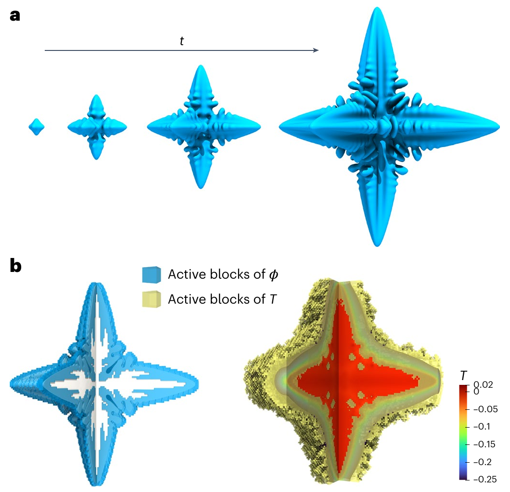
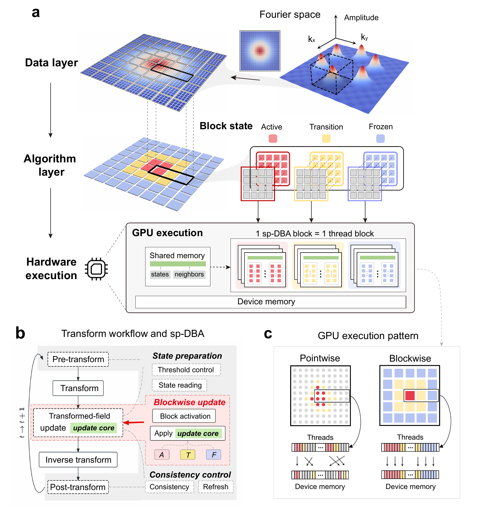
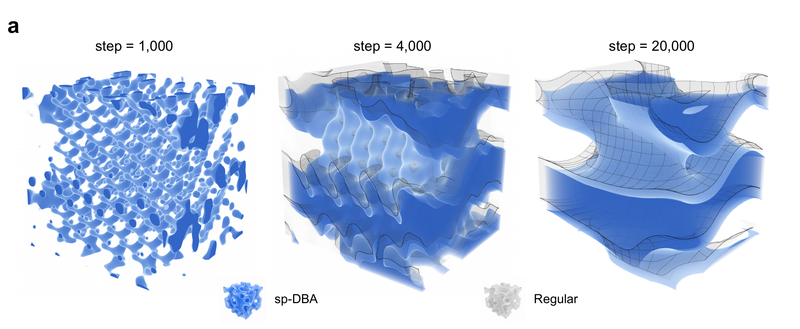
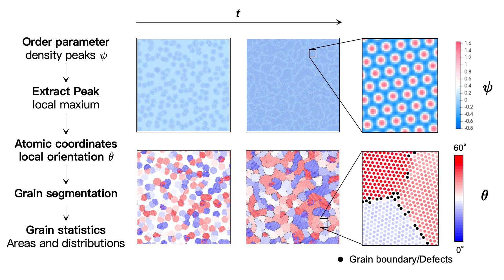
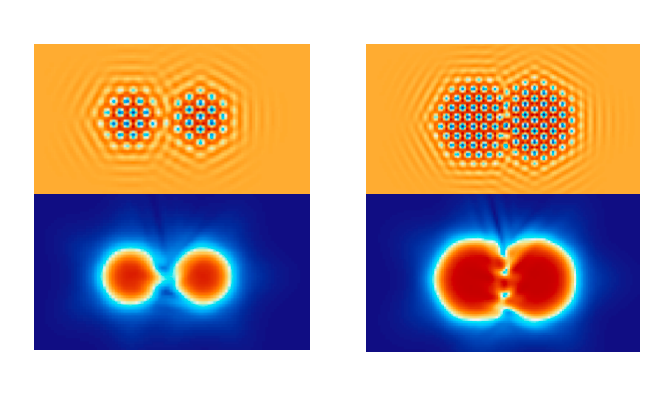
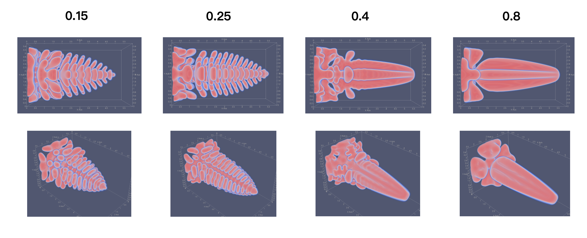

Research
I build numerical solvers and adaptive GPU methods for microstructure evolution. My work connects phase-field models, FFT implementation, and distributed computing with tools for analysing grains and defects.
DBA · Prior work


A growing crystal changes most at its interface. Developed by Ruoyao Zhang and Yang Xia, DBA concentrates work around these evolving regions. GPU-aligned blocks, shared-memory activation states, and overlapped communication connect the method to the hardware. The paper reports near-ideal scaling to 32 GPUs in dendritic-growth tests. This real-space framework is the starting point for sp-DBA.
sp-DBA
Fourier pseudo-spectral solvers alternate between real and Fourier space using FFTs. Each Fourier mode spans the domain, so DBA’s local activation rules cannot simply be carried over. I led the design and implementation of sp-DBA with Prof. Yang Xia to bring adaptive updates into these workflows.
The framework combines GPU blockwise execution with optimized transforms, keeps the equations and numerical methods, and needs limited solver-specific changes. Applications include phase-field crystal (PFC) for materials, reaction–cross-diffusion (RCD) for biological patterns, and digital backpropagation (DBP) for optical communications.


Jingkun Jiang, Pingchuan Deng, and Yang Xia. sp-DBA: a general framework for adaptive transform-domain computation. Preprint (2026).
Phase-field crystal (PFC)
Materials science · Polycrystalline coarsening
PFC resolves atomic ordering through a continuous density field. High-order spatial terms and lattice periodicity suit Fourier methods. In this structural PFC (XPFC) example, sp-DBA focuses updates near the dominant Fourier bands as grains evolve.

Reaction–cross-diffusion (RCD)
Biological pattern formation


RCD couples reactions and diffusion between components to produce patterns. The image shows eight components. In a separate 48-component benchmark, sp-DBA with eigendecomposition achieved up to 28.1× update-stage speedup over direct-matrix Regular.
Digital backpropagation (DBP)
Optical communications

DBP numerically reverses optical propagation to recover signals. In controlled Gaussian-wave-packet tests, sp-DBA concentrates linear updates in occupied frequency bands while retaining nonlinear steps and FFT/IFFT. Overall speedup reached 8.4× over full-update Regular.
FFT & Distributed FFTs

I wrote and optimized CPU FFT kernels for my early PFC solver. For multi-GPU PFC, I implemented slab-decomposed FFTs and worked on data layout, packing, and MPI communication.
Computational Materials
Grain boundaries & defects
Phase-field crystal (PFC) · From density fields to grain statistics


I extract PFC density peaks, calculate local orientations, and reconstruct grains under periodic boundaries. My code measures grain areas and size distributions; OVITO helps inspect the particles. The video shows a separate small-angle circular grain boundary.
Amplitude phase-field crystal (APFC)
APFC describes atomic density through three slowly varying complex amplitudes. I built the solvers and reconstructed the upper density panels. Their summed magnitudes below show stronger variation at crystal edges and the contact region.


Structural phase-field crystal (XPFC)
XPFC uses a correlation kernel to favor selected lattice spacings. I implemented solvers and compared density with Fourier-space diagnostics to check lattice choices, model parameters, and initialization.

PF · Dendritic growth
I built a three-dimensional phase-field solver coupling phase and temperature with finite differences. CPU/OpenMP, MPI, and CUDA versions let me examine anisotropy and the resulting dendritic morphology.

